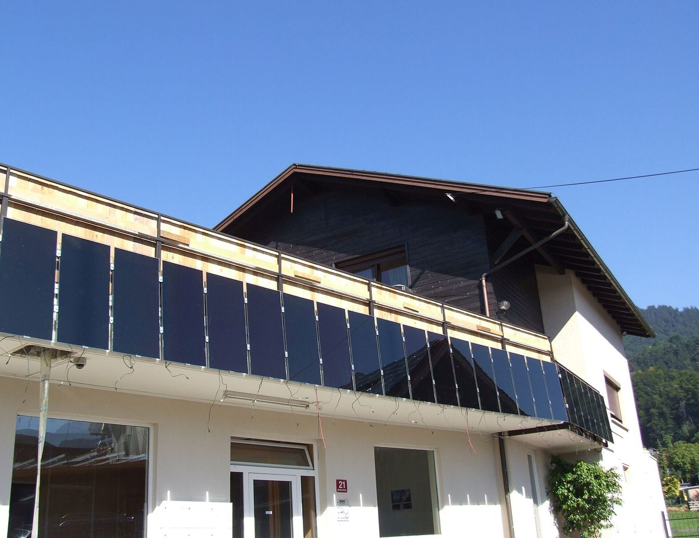

서울 대단지 아파트, 관리규약 들어 베란다 태양광 막았지만…15곳 중 14곳 규약엔 금지 조항 없어

시사IN·플랜1.5, 전기 많이 쓰는 1,000세대 이상 131곳에 물으니 68곳 불허…강남 3구 22곳 중 20곳 불허, 서울시 표준규약은 서약서 내면 동의하는 항목
서울에서 전기를 많이 쓰는 1,000세대 이상 대단지 아파트 가운데 관리규약을 근거로 베란다 태양광 설치를 막은 15곳 중 14곳은 실제 규약에 금지 조항이 없는 것으로 확인됐다. 시사IN과 기후환경단체 플랜1.5가 서울 아파트 3,546개 단지의 단위면적당 전기 사용량 자료를 바탕으로 사용량이 많은 대단지 132곳의 관리사무소에 전화로 물은 결과, 답한 131곳 중 68곳(51.9%)이 설치할 수 없다고 했고 이 가운데 15곳(22.1%)이 관리규약을 이유로 들었다. 2026년 3월 개정된 제19차 서울시 공동주택 관리규약 준칙은 베란다 태양광을 안전사고 책임 서약서를 내고 안전·소음·미관에 지장이 없으면 관리주체가 동의하는 '동의 사항'으로 두고 있으며, 이를 금지에 해당하는 '부동의 사항'으로 정한 곳은 서대문구의 1개 단지뿐이었다. 지역별로는 강남 3구 22곳 중 20곳이 불허한 반면 설치비의 80%를 구가 지원하는 노원구에 허용 단지 63곳 중 13곳이 몰렸고, 목동에서는 허용과 불허가 6곳씩 갈렸다. 불허 단지의 58.8%인 40곳은 자체 기준을 내세웠지만 언제 어떤 절차로 정했는지 설명한 곳은 1곳뿐이었고, 구청 허가가 필요 없는데도 허가를 받아 오라고 하는 등 규약·제도와 다른 안내도 있었다. 플랜1.5의 윤세종 정책활동가(변호사)는 관리주체의 동의가 관리소장 마음대로 하라는 뜻이 아니며, 안전·소음·미관을 따져 보지 않고 한꺼번에 막는 것은 규약 취지에 어긋난다고 지적했다.
시민에너지 관점
정부가 베란다 태양광 200만 가구를 내걸고 추경으로 가정형 태양광 예산 375억 원을 마련했지만, 지자체 실수요가 1만3,629세대·국비 약 39억 원에 그친 것은 예산만으로는 보급이 늘지 않는다는 뜻이고, 이번 조사는 그 문턱 가운데 하나가 아파트 관리사무소 창구임을 보여 준다. 안전과 미관을 걱정하는 주민도 있지만, 서울시 표준규약이 이미 서약서와 안전·소음·미관 검토라는 조건을 두고 있으니 막을 일이 아니라 그 조건대로 따져 동의하면 된다. 독일은 2024~2025년 법을 고쳐 공동체가 발코니 태양광 설치 자체는 거부하지 못하고 방법·위치에만 조건을 달게 했으며, 2025년 설치 대수가 100만 대를 넘었다. 서울시와 정부는 관리규약 준칙의 뜻을 단지마다 다시 알리고, 세입자를 포함한 입주민 누구나 자기 집 베란다에서 전기를 만들 수 있도록 설치 권리를 법에 담아야 한다.
출처: 시사IN 2026-11-05 김다은 원문 보기
ソウルの大規模団地、管理規約を理由にベランダ太陽光を拒否…15団地のうち14団地は規約に禁止条項なし
時事IN・プラン1.5、電力多消費の1,000世帯以上131団地に問い合わせると68団地が不許可…江南3区は22団地中20団地が不許可、ソウル市の標準規約は誓約書を出せば同意する項目
ソウルで電力を多く使う1,000世帯以上の大規模マンション団地のうち、管理規約を根拠にベランダ太陽光の設置を拒んだ15団地のうち14団地は、実際の規約に禁止条項がないことが分かった。時事INと気候環境団体「プラン1.5」が、ソウルのマンション3,546団地の単位面積当たり電力使用量のデータをもとに、使用量の多い大規模団地132カ所の管理事務所に電話で問い合わせたところ、回答した131団地のうち68団地（51.9%）が設置できないと答え、このうち15団地（22.1%）が管理規約を理由に挙げた。2026年3月に改正された第19次ソウル市共同住宅管理規約準則は、ベランダ太陽光を、安全事故の責任に関する誓約書を提出し、安全・騒音・美観に支障がなければ管理主体が同意する「同意事項」と定めており、これを禁止にあたる「不同意事項」とした団地は西大門区の1団地だけだった。地域別では、江南3区の22団地のうち20団地が不許可とした一方、設置費の80%を区が支援する蘆原区に許可団地63カ所のうち13カ所が集中し、木洞では許可と不許可が6団地ずつに分かれた。不許可団地の58.8%にあたる40団地は独自の基準を掲げたが、いつ、どのような手続きで決めたかを説明したのは1団地だけで、区役所の許可は不要なのに許可を取ってくるよう求めるなど、規約や制度と異なる案内もあった。プラン1.5のユン・セジョン政策活動家（弁護士）は、管理主体の同意とは管理所長が思いのままにしてよいという意味ではなく、安全・騒音・美観を検討せずに一律に拒むのは規約の趣旨に反すると指摘した。
市民エネルギーの視点
政府はベランダ太陽光200万世帯を掲げ、補正予算で家庭用太陽光の予算375億ウォンを確保したが、自治体の実需要は1万3,629世帯・国費約39億ウォンにとどまった。予算だけでは普及が進まないということであり、今回の調査はその壁の一つがマンション管理事務所の窓口であることを示している。安全や美観を心配する住民もいるが、ソウル市の標準規約はすでに誓約書と安全・騒音・美観の検討という条件を設けており、拒むのではなく、その条件に沿って検討して同意すればよい。ドイツは2024〜2025年に法を改正し、共同体はバルコニー太陽光の設置そのものは拒否できず、方法や位置にだけ条件を付けられるようにし、2025年には設置台数が100万台を超えた。ソウル市と政府は管理規約準則の趣旨を団地ごとに改めて周知し、賃借人を含むすべての入居者が自宅のベランダで電気をつくれるよう、設置の権利を法に明記すべきだ。
出典: 時事IN 2026-11-05 キム・ダウン 原文を読む
首尔大型小区以管理规约为由拒绝阳台光伏…15个小区中14个的规约并无禁止条款
《时事IN》与Plan 1.5调查耗电量大的千户以上131个小区，68个不允许安装…江南3区22个小区中20个不允许，首尔市标准规约将其列为提交承诺书即可同意的事项
在首尔耗电量大的1,000户以上大型公寓小区中，以管理规约为由拒绝安装阳台光伏的15个小区里，有14个小区的实际规约中并无禁止条款。《时事IN》与气候环境团体Plan 1.5根据首尔3,546个公寓小区单位面积用电量数据，向用电量大的132个大型小区管理处电话询问，在作出答复的131个小区中，68个（51.9%）表示不能安装，其中15个（22.1%）以管理规约为理由。2026年3月修订的第19次首尔市共同住宅管理规约准则，将阳台光伏规定为提交安全事故责任承诺书、且对安全、噪音和美观无妨碍时由管理主体同意的"同意事项"，而将其定为相当于禁止的"不同意事项"的只有西大门区的1个小区。按地区看，江南3区22个小区中有20个不允许安装，而由区政府补贴80%安装费用的芦原区集中了63个允许小区中的13个，木洞则允许与不允许各占6个小区。不允许安装的小区中有58.8%即40个以"自定标准"为由，但说明何时、经何种程序作出决定的只有1个小区，还有小区在无需区政府许可的情况下要求居民先去办许可，作出与规约和制度不符的答复。Plan 1.5政策活动家Yoon Se-jong（律师）指出，需经管理主体同意并不意味着管理处长可以随意决定，不审查安全、噪音和美观就一律拒绝，违背了规约的宗旨。
市民能源视角
政府提出阳台光伏200万户目标，并通过追加预算安排了375亿韩元家庭光伏预算，但地方政府的实际需求只有1万3,629户、国费约39亿韩元，这说明仅靠预算无法扩大普及，而此次调查显示，门槛之一正是公寓管理处的窗口。虽然有居民担心安全和美观，但首尔市标准规约已经设定了承诺书以及安全、噪音、美观审查等条件，应当按条件审查后同意，而不是一概拒绝。德国在2024至2025年修法，规定业主共同体不能拒绝安装阳台光伏本身，只能对安装方式和位置附加条件，2025年安装量已超过100万台。首尔市和政府应向各小区重新说明管理规约准则的宗旨，并把安装权利写入法律，让包括租户在内的所有住户都能在自家阳台发电。
来源: 时事IN 2026-11-05 Kim Da-eun 查看原文
Seoul mega-complexes cite management bylaws to block balcony solar, but 14 of 15 have no such ban in their bylaws
SisaIN and Plan 1.5 asked 131 high-consumption complexes of 1,000-plus households and 68 refused; 20 of 22 refused in Seoul's three Gangnam districts, while the city's standard bylaw treats balcony solar as an item to be approved once a safety pledge is filed
Among Seoul apartment complexes of 1,000 or more households with high electricity use, 14 of the 15 that cited their management bylaws to block balcony solar installations turned out to have no ban in those bylaws. Weekly magazine SisaIN and the climate group Plan 1.5 used per-area electricity data for 3,546 Seoul apartment complexes to pick 132 high-consumption large complexes and phoned their management offices; of the 131 that responded, 68 (51.9%) said installation was not allowed, and 15 of those (22.1%) cited their bylaws. Seoul's 19th standard apartment management bylaw, revised in March 2026, lists balcony solar as a "consent item" that the management body approves when residents submit a safety-liability pledge and there is no problem with safety, noise or appearance; only one complex, in Seodaemun-gu, classified it as a "non-consent item," the category for prohibited acts. By area, 20 of 22 complexes in the three Gangnam districts refused, while Nowon-gu, which covers 80% of installation costs, accounted for 13 of the 63 complexes that allowed it, and Mok-dong split evenly with six allowing and six refusing. Forty of the refusing complexes (58.8%) pointed to their own internal rules, yet only one could explain when and through what process the rule was adopted, and some gave guidance at odds with the rules, such as telling residents to get district office approval even though none is required. Yoon Se-jong, a policy activist and lawyer at Plan 1.5, said the need for management consent does not mean the building manager can decide at will, and that blanket refusals without weighing safety, noise and appearance go against the purpose of the bylaw.
Citizen Energy View
The government has set a goal of balcony solar for 2 million households and secured 37.5 billion won for home solar in a supplementary budget, yet actual local-government demand came to only 13,629 households and about 3.9 billion won in national funds, which shows that money alone will not drive uptake, and this survey shows that one of the barriers is the apartment management office counter. Some residents worry about safety and appearance, but Seoul's standard bylaw already sets conditions, a pledge plus a review of safety, noise and appearance, so the answer is to review requests against those conditions and approve them rather than to refuse outright. Germany amended its laws in 2024 and 2025 so that owners' communities cannot reject balcony solar itself and may only set conditions on how and where it is installed, and installations passed 1 million units in 2025. Seoul and the national government should remind every complex what the standard bylaw actually means, and write into law the right of every resident, tenants included, to generate electricity on their own balcony.
Source: SisaIN 2026-11-05 Kim Da-eun Read the original